1. Intrams
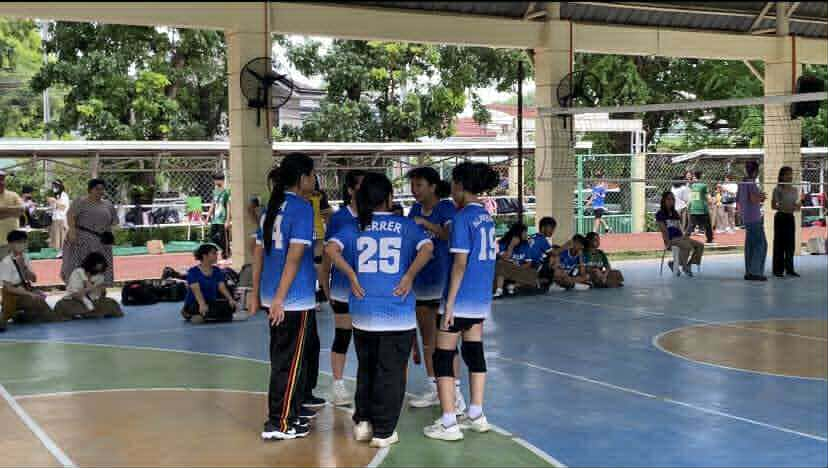
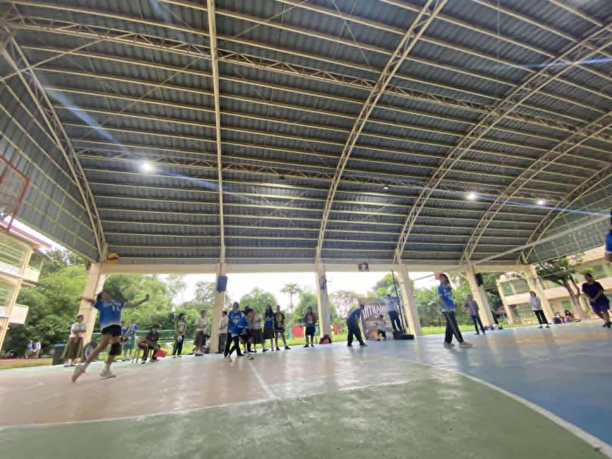
Reflection
The most important thing I learned from the Intrams is the value of teamwork, discipline, and sportsmanship. Playing volleyball, basketball, sack race, and tug of war helped me understand how cooperation leads to success. I can apply this lesson in real life by being a good teammate and helping others achieve a goal. I actively participated and gave my best in every game. If I were to teach this topic, I would explain that sports are not just about winning but about building unity. Events like Intrams are important because they build friendships and strengthen school spirit.
2. Buwan ng Wika
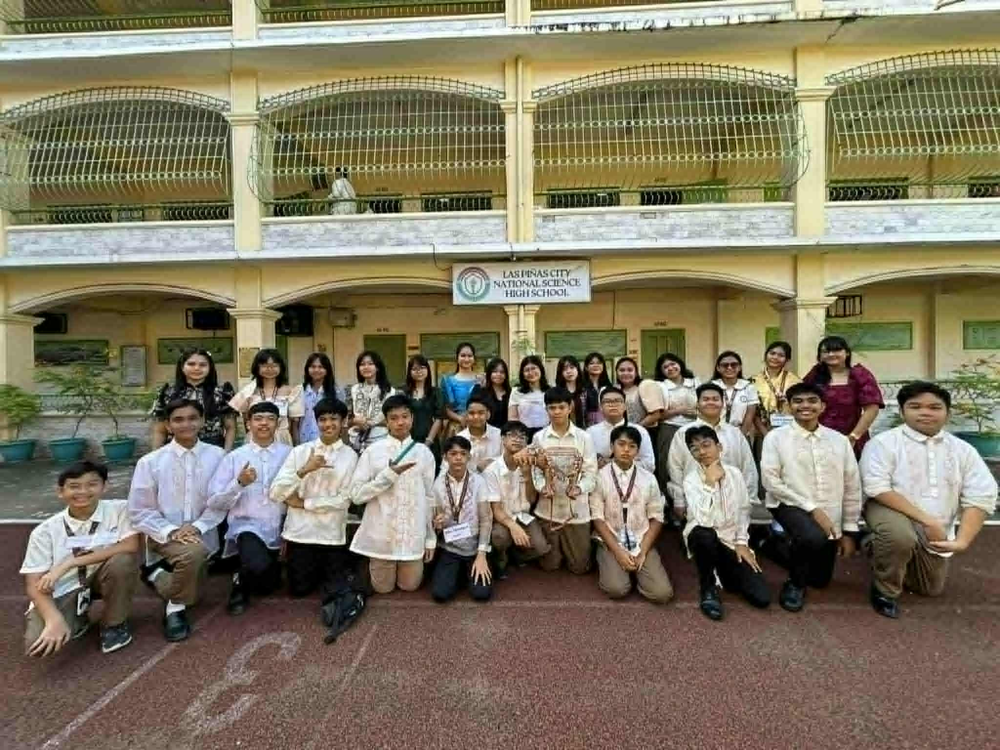
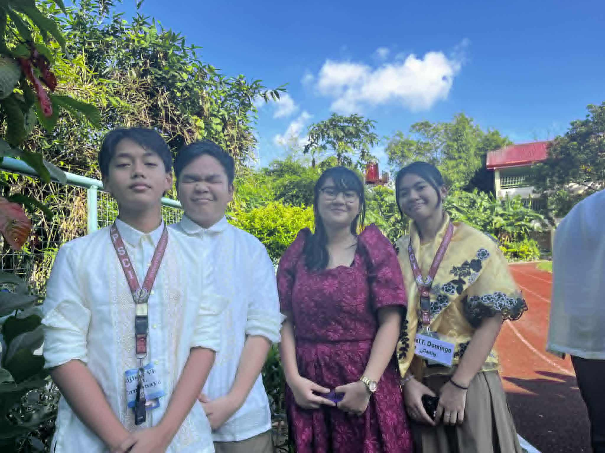
Reflection
From the Buwan ng Wika celebration, I learned to value and take pride in our own language and culture. Wearing the barong made me appreciate our Filipino identity even more. I can apply this in real life by continuing to speak Filipino with respect and promote our culture to others. I actively participated by wearing traditional clothing during the event. If I were to teach this, I would highlight the importance of language in uniting people. Buwan ng Wika is important because it strengthens our national identity and cultural awareness.
3. Science Month
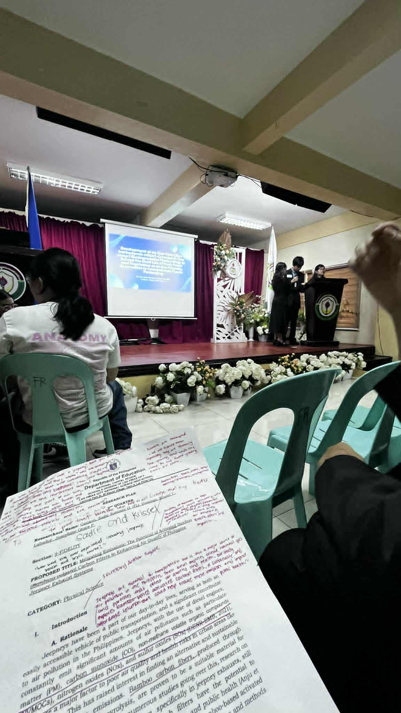
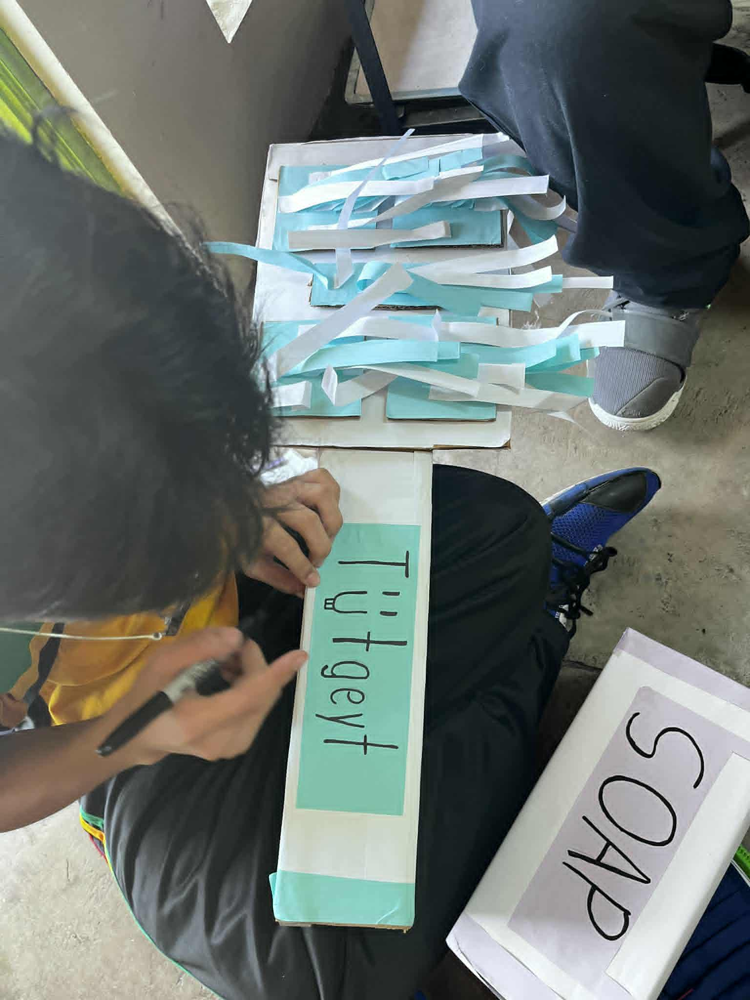
Reflection
Science Month taught me how important curiosity and innovation are. Presenting our research proposal helped me gain confidence in sharing ideas and working as a team. I can apply this by staying curious and solving real-life problems using what I learn in science. I actively participated through our group presentation. If I were to teach this, I would show how science helps us improve daily life. Science Month is important because it inspires students to think critically and create new solutions for the future.
4. Cluster Meet
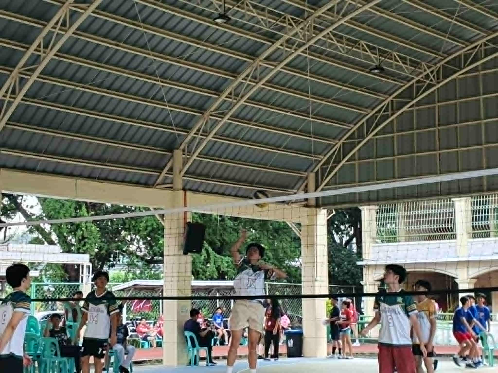
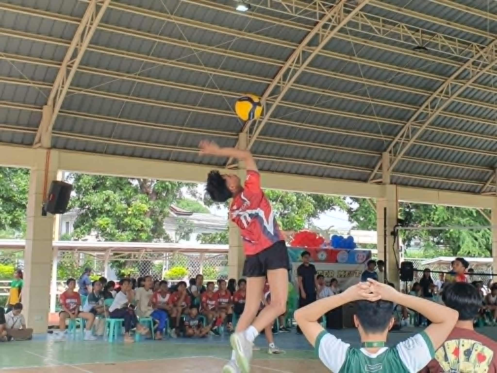
Reflection
The Cluster Meet taught me about determination, confidence, and the value of fair play. Competing with other schools was both challenging and exciting, and I learned to stay humble whether I win or lose. I can apply this lesson in real life by respecting others and striving to improve myself. If I were to teach this, I would emphasize the importance of respect and perseverance. Cluster Meet events are important because they build unity and give us a chance to represent our school with pride.
5. AP Month
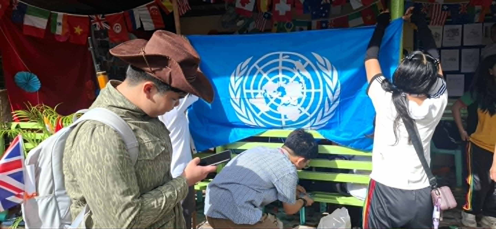
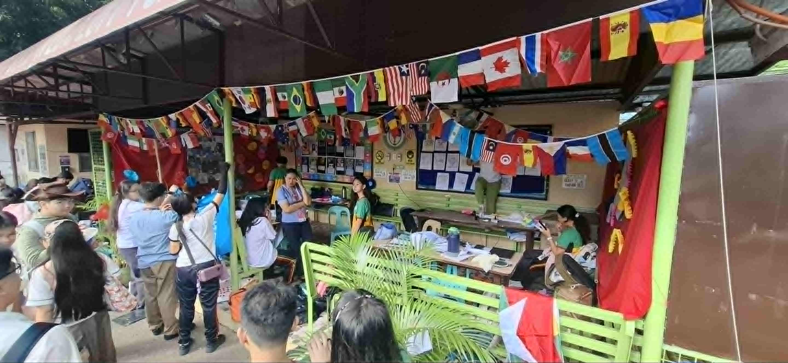
Reflection
AP Month helped me understand the importance of history, culture, and citizenship. It reminded me that learning about our past helps us make better choices for the future. I can apply what I learned by being a responsible citizen who respects others. If I were to teach this, I would explain our country’s story through activities and discussions. AP Month is important because it encourages us to appreciate our heritage and become better members of society.
6. Teacher’s Day
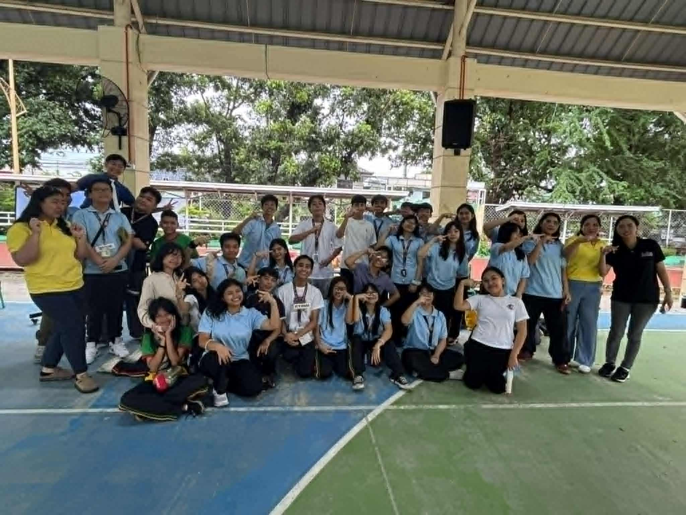
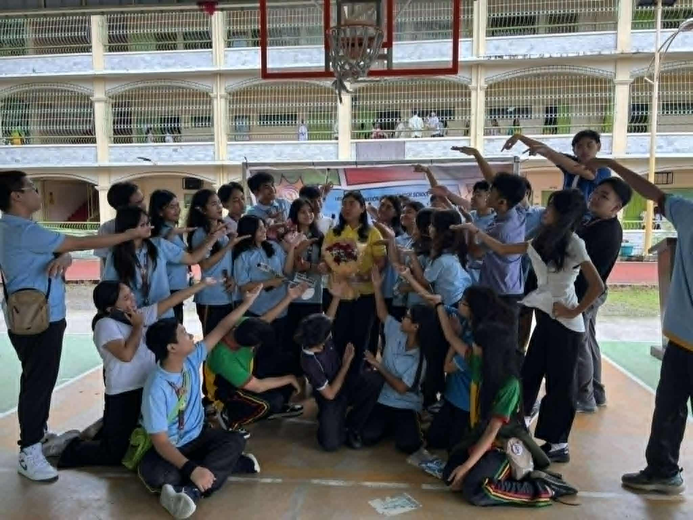
Reflection
During Teacher’s Day, I learned how important it is to show gratitude to our mentors. Gifting our teachers made me realize how much effort they put into shaping our future. I can apply this by always respecting and appreciating the people who help me learn. I actively participated by giving gifts and celebrating with them. If I were to teach this, I would explain that small acts of kindness can mean a lot. Teacher’s Day is important because it reminds us to honor the dedication and sacrifices of our educators.